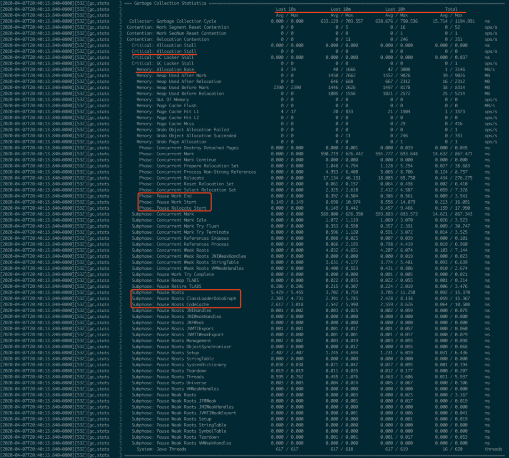
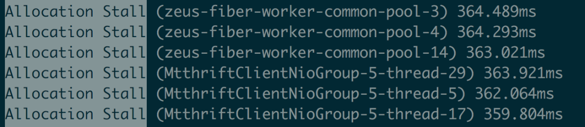
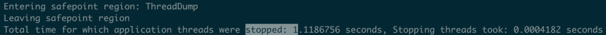

Java 新一代垃圾回收器 ZGC¶
ZGC（The Z Garbage Collector）是 JDK 11 中推出的一款低延迟垃圾回收器，它的设计目标包括：
- 停顿时间不超过 10ms；
- 停顿时间不会随着堆的大小，或者活跃对象的大小而增加；
- 支持 8MB~4TB 级别的堆（未来支持 16TB）。
GC 之痛¶
很多低延迟高可用 Java 服务的系统可用性经常受 GC 停顿的困扰。GC 停顿指垃圾回收期间 STW（Stop The World），当 STW 时，所有应用线程停止活动，等待 GC 停顿结束。
以风控服务为例，部分上游业务要求风控服务 65ms 内返回结果，并且可用性要达到 99.99%。但因为 GC 停顿，我们未能达到上述可用性目标。当时使用的是 CMS 垃圾回收器，单次 Young GC 40ms，一分钟 10 次，接口平均响应时间 30ms。通过计算可知，有（ 40ms + 30ms ) _ 10 次 / 60000ms = 1.12%的请求的响应时间会增加 0 ~ 40ms 不等，其中 30ms _ 10 次 / 60000ms = 0.5%的请求响应时间会增加 40ms。
可见，GC 停顿对响应时间的影响较大。为了降低 GC 停顿对系统可用性的影响，我们从降低单次 GC 时间和降低 GC 频率两个角度出发进行了调优，还测试过 G1 垃圾回收器，但这三项措施均未能降低 GC 对服务可用性的影响。
CMS 与 G1 停顿时间瓶颈¶
在介绍 ZGC 之前，首先回顾一下 CMS 和 G1 的 GC 过程以及停顿时间的瓶颈。CMS 新生代的 Young GC、G1 和 ZGC 都基于标记-复制算法，但算法具体实现的不同就导致了巨大的性能差异。
标记-复制算法应用在 CMS 新生代（ParNew 是 CMS 默认的新生代垃圾回收器）和 G1 垃圾回收器中。标记-复制算法可以分为三个阶段：
- 标记阶段，即从 GC Roots 集合开始，标记活跃对象；
- 转移阶段，即把活跃对象复制到新的内存地址上；
- 重定位阶段，因为转移导致对象的地址发生了变化，在重定位阶段，所有指向对象旧地址的指针都要调整到对象新的地址上。
下面以 G1 为例，通过 G1 中标记-复制算法过程（G1 的 Young GC 和 Mixed GC 均采用该算法），分析 G1 停顿耗时的主要瓶颈。G1 垃圾回收周期如下图所示：

G1 的混合回收过程可以分为标记阶段、清理阶段和复制阶段。
标记阶段停顿分析¶
- 初始标记阶段：初始标记阶段是指从 GC Roots 出发标记全部直接子节点的过程，该阶段是 STW 的。由于 GC Roots 数量不多，通常该阶段耗时非常短。
- 并发标记阶段：并发标记阶段是指从 GC Roots 开始对堆中对象进行可达性分析，找出存活对象。该阶段是并发的，即应用线程和 GC 线程可以同时活动。并发标记耗时相对长很多，但因为不是 STW，所以我们不太关心该阶段耗时的长短。
- 再标记阶段：重新标记那些在并发标记阶段发生变化的对象。该阶段是 STW 的。
清理阶段停顿分析¶
- 清理阶段清点出有存活对象的分区和没有存活对象的分区，该阶段不会清理垃圾对象，也不会执行存活对象的复制。该阶段是 STW 的。
复制阶段停顿分析¶
- 复制算法中的转移阶段需要分配新内存和复制对象的成员变量。转移阶段是 STW 的，其中内存分配通常耗时非常短，但对象成员变量的复制耗时有可能较长，这是因为复制耗时与存活对象数量与对象复杂度成正比。对象越复杂，复制耗时越长。
四个 STW 过程中，初始标记因为只标记 GC Roots，耗时较短。再标记因为对象数少，耗时也较短。清理阶段因为内存分区数量少，耗时也较短。转移阶段要处理所有存活的对象，耗时会较长。因此，G1 停顿时间的瓶颈主要是标记-复制中的转移阶段 STW。为什么转移阶段不能和标记阶段一样并发执行呢？主要是 G1 未能解决转移过程中准确定位对象地址的问题。
G1 的 Young GC 和 CMS 的 Young GC，其标记-复制全过程 STW，这里不再详细阐述。
ZGC 原理¶
全并发的 ZGC¶
与 CMS 中的 ParNew 和 G1 类似，ZGC 也采用标记-复制算法，不过 ZGC 对该算法做了重大改进：ZGC 在标记、转移和重定位阶段几乎都是并发的，这是 ZGC 实现停顿时间小于 10ms 目标的最关键原因。
ZGC 垃圾回收周期如下图所示：

ZGC 只有三个 STW 阶段：初始标记，再标记，初始转移。其中，初始标记和初始转移分别都只需要扫描所有 GC Roots，其处理时间和 GC Roots 的数量成正比，一般情况耗时非常短；再标记阶段 STW 时间很短，最多 1ms，超过 1ms 则再次进入并发标记阶段。即，ZGC 几乎所有暂停都只依赖于 GC Roots 集合大小，停顿时间不会随着堆的大小或者活跃对象的大小而增加。与 ZGC 对比，G1 的转移阶段完全 STW 的，且停顿时间随存活对象的大小增加而增加。
ZGC 关键技术¶
ZGC 通过着色指针和读屏障技术，解决了转移过程中准确访问对象的问题，实现了并发转移。大致原理描述如下：并发转移中“并发”意味着 GC 线程在转移对象的过程中，应用线程也在不停地访问对象。假设对象发生转移，但对象地址未及时更新，那么应用线程可能访问到旧地址，从而造成错误。而在 ZGC 中，应用线程访问对象将触发“读屏障”，如果发现对象被移动了，那么“读屏障”会把读出来的指针更新到对象的新地址上，这样应用线程始终访问的都是对象的新地址。那么，JVM 是如何判断对象被移动过呢？就是利用对象引用的地址，即着色指针。下面介绍着色指针和读屏障技术细节。
着色指针¶
着色指针是一种将信息存储在指针中的技术。
ZGC 仅支持 64 位系统，它把 64 位虚拟地址空间划分为多个子空间，如下图所示：

其中，[0~4TB) 对应 Java 堆，[4TB ~ 8TB) 称为 M0 地址空间，[8TB ~ 12TB) 称为 M1 地址空间，[12TB ~ 16TB) 预留未使用，[16TB ~ 20TB) 称为 Remapped 空间。
当应用程序创建对象时，首先在堆空间申请一个虚拟地址，但该虚拟地址并不会映射到真正的物理地址。ZGC 同时会为该对象在 M0、M1 和 Remapped 地址空间分别申请一个虚拟地址，且这三个虚拟地址对应同一个物理地址，但这三个空间在同一时间有且只有一个空间有效。ZGC 之所以设置三个虚拟地址空间，是因为它使用“空间换时间”思想，去降低 GC 停顿时间。“空间换时间”中的空间是虚拟空间，而不是真正的物理空间。后续章节将详细介绍这三个空间的切换过程。
与上述地址空间划分相对应，ZGC 实际仅使用 64 位地址空间的第 0~41 位，而第 42~45 位存储元数据，第 47~63 位固定为 0。

ZGC 将对象存活信息存储在 42~45 位中，这与传统的垃圾回收并将对象存活信息放在对象头中完全不同。
读屏障¶
读屏障是 JVM 向应用代码插入一小段代码的技术。当应用线程从堆中读取对象引用时，就会执行这段代码。需要注意的是，仅“从堆中读取对象引用”才会触发这段代码。
读屏障示例：
Object o = obj.FieldA // 从堆中读取引用，需要加入屏障
<Load barrier>
Object p = o // 无需加入屏障，因为不是从堆中读取引用
o.dosomething // 无需加入屏障，因为不是从堆中读取引用
int i = obj.FieldB //无需加入屏障，因为不是对象引用
ZGC 中读屏障的代码作用：在对象标记和转移过程中，用于确定对象的引用地址是否满足条件，并作出相应动作。
ZGC 并发处理演示
接下来详细介绍 ZGC 一次垃圾回收周期中地址视图的切换过程：
- 初始化：ZGC 初始化之后，整个内存空间的地址视图被设置为 Remapped。程序正常运行，在内存中分配对象，满足一定条件后垃圾回收启动，此时进入标记阶段。
- 并发标记阶段：第一次进入标记阶段时视图为 M0，如果对象被 GC 标记线程或者应用线程访问过，那么就将对象的地址视图从 Remapped 调整为 M0。所以，在标记阶段结束之后，对象的地址要么是 M0 视图，要么是 Remapped。如果对象的地址是 M0 视图，那么说明对象是活跃的；如果对象的地址是 Remapped 视图，说明对象是不活跃的。
- 并发转移阶段：标记结束后就进入转移阶段，此时地址视图再次被设置为 Remapped。如果对象被 GC 转移线程或者应用线程访问过，那么就将对象的地址视图从 M0 调整为 Remapped。
其实，在标记阶段存在两个地址视图 M0 和 M1，上面的过程显示只用了一个地址视图。之所以设计成两个，是为了区别前一次标记和当前标记。即第二次进入并发标记阶段后，地址视图调整为 M1，而非 M0。
着色指针和读屏障技术不仅应用在并发转移阶段，还应用在并发标记阶段：将对象设置为已标记，传统的垃圾回收器需要进行一次内存访问，并将对象存活信息放在对象头中；而在 ZGC 中，只需要设置指针地址的第 42~45 位即可，并且因为是寄存器访问，所以速度比访问内存更快。

ZGC 调优实践¶
ZGC 不是“银弹”，需要根据服务的具体特点进行调优。网络上能搜索到实战经验较少，调优理论需自行摸索，我们在此阶段也耗费了不少时间，最终才达到理想的性能。本文的一个目的是列举一些使用 ZGC 时常见的问题，帮助大家使用 ZGC 提高服务可用性。
重要参数配置样例：
-Xms10G -Xmx10G
-XX:ReservedCodeCacheSize=256m -XX:InitialCodeCacheSize=256m
-XX:+UnlockExperimentalVMOptions -XX:+UseZGC
-XX:ConcGCThreads=2 -XX:ParallelGCThreads=6
-XX:ZCollectionInterval=120 -XX:ZAllocationSpikeTolerance=5
-XX:+UnlockDiagnosticVMOptions -XX:-ZProactive
-Xlog:safepoint,classhisto*=trace,age*,gc*=info:file=/opt/logs/logs/gc-%t.log:time,tid,tags:filecount=5,filesize=50m
- -Xms -Xmx：堆的最大内存和最小内存，这里都设置为 10G，程序的堆内存将保持 10G 不变。
- -XX:ReservedCodeCacheSize -XX:InitialCodeCacheSize: 设置 CodeCache 的大小， JIT 编译的代码都放在 CodeCache 中，一般服务 64m 或 128m 就已经足够。我们的服务因为有一定特殊性，所以设置的较大，后面会详细介绍。
- -XX:+UnlockExperimentalVMOptions -XX:+UseZGC：启用 ZGC 的配置。
- -XX:ConcGCThreads：并发回收垃圾的线程。默认是总核数的 12.5%，8 核 CPU 默认是 1。调大后 GC 变快，但会占用程序运行时的 CPU 资源，吞吐会受到影响。
- -XX:ParallelGCThreads：STW 阶段使用线程数，默认是总核数的 60%。
- -XX:ZCollectionInterval：ZGC 发生的最小时间间隔，单位秒。
- -XX:ZAllocationSpikeTolerance：ZGC 触发自适应算法的修正系数，默认 2，数值越大，越早的触发 ZGC。
- -XX:+UnlockDiagnosticVMOptions -XX:-ZProactive：是否启用主动回收，默认开启，这里的配置表示关闭。
- -Xlog：设置 GC 日志中的内容、格式、位置以及每个日志的大小。
理解 ZGC 触发时机¶
相比于 CMS 和 G1 的 GC 触发机制，ZGC 的 GC 触发机制有很大不同。ZGC 的核心特点是并发，GC 过程中一直有新的对象产生。如何保证在 GC 完成之前，新产生的对象不会将堆占满，是 ZGC 参数调优的第一大目标。因为在 ZGC 中，当垃圾来不及回收将堆占满时，会导致正在运行的线程停顿，持续时间可能长达秒级之久。
ZGC 有多种 GC 触发机制，总结如下：
- 阻塞内存分配请求触发：当垃圾来不及回收，垃圾将堆占满时，会导致部分线程阻塞。我们应当避免出现这种触发方式。日志中关键字是“Allocation Stall”。
- 基于分配速率的自适应算法：最主要的 GC 触发方式，其算法原理可简单描述为”ZGC 根据近期的对象分配速率以及 GC 时间，计算出当内存占用达到什么阈值时触发下一次 GC”。自适应算法的详细理论可参考彭成寒《新一代垃圾回收器 ZGC 设计与实现》一书中的内容。通过 ZAllocationSpikeTolerance 参数控制阈值大小，该参数默认 2，数值越大，越早的触发 GC。我们通过调整此参数解决了一些问题。日志中关键字是“Allocation Rate”。
- 基于固定时间间隔：通过 ZCollectionInterval 控制，适合应对突增流量场景。流量平稳变化时，自适应算法可能在堆使用率达到 95%以上才触发 GC。流量突增时，自适应算法触发的时机可能会过晚，导致部分线程阻塞。我们通过调整此参数解决流量突增场景的问题，比如定时活动、秒杀等场景。日志中关键字是“Timer”。
- 主动触发规则：类似于固定间隔规则，但时间间隔不固定，是 ZGC 自行算出来的时机，我们的服务因为已经加了基于固定时间间隔的触发机制，所以通过-ZProactive 参数将该功能关闭，以免 GC 频繁，影响服务可用性。日志中关键字是“Proactive”。
- 预热规则：服务刚启动时出现，一般不需要关注。日志中关键字是“Warmup”。
- 外部触发：代码中显式调用 System.gc 触发。日志中关键字是“System.gc”。
- 元数据分配触发：元数据区不足时导致，一般不需要关注。日志中关键字是“Metadata GC Threshold”。
理解 ZGC 日志¶
一次完整的 GC 过程，需要注意的点已在图中标出。

注意：该日志过滤了进入安全点的信息。正常情况，在一次 GC 过程中还穿插着进入安全点的操作。
GC 日志中每一行都注明了 GC 过程中的信息，关键信息如下：
- Start：开始 GC，并标明的 GC 触发的原因。上图中触发原因是自适应算法。
- Phase-Pause Mark Start：初始标记，会 STW。
- Phase-Pause Mark End：再次标记，会 STW。
- Phase-Pause Relocate Start：初始转移，会 STW。
- Heap 信息：记录了 GC 过程中 Mark、Relocate 前后的堆大小变化状况。High 和 Low 记录了其中的最大值和最小值，我们一般关注 High 中 Used 的值，如果达到 100%，在 GC 过程中一定存在内存分配不足的情况，需要调整 GC 的触发时机，更早或者更快地进行 GC。
- GC 信息统计：可以定时的打印垃圾收集信息，观察 10 秒内、10 分钟内、10 个小时内，从启动到现在的所有统计信息。利用这些统计信息，可以排查定位一些异常点。
日志中内容较多，关键点已用红线标出，含义较好理解，更详细的解释大家可以自行在网上查阅资料。

理解 ZGC 停顿原因
我们在实战过程中共发现了 6 种使程序停顿的场景，分别如下：
- GC 时，初始标记：日志中 Pause Mark Start。
- GC 时，再标记：日志中 Pause Mark End。
- GC 时，初始转移：日志中 Pause Relocate Start。
- 内存分配阻塞：当内存不足时线程会阻塞等待 GC 完成，关键字是"Allocation Stall"。 
- 安全点：所有线程进入到安全点后才能进行 GC，ZGC 定期进入安全点判断是否需要 GC。先进入安全点的线程需要等待后进入安全点的线程直到所有线程挂起。
- dump 线程、内存：比如 jstack、jmap 命令。
